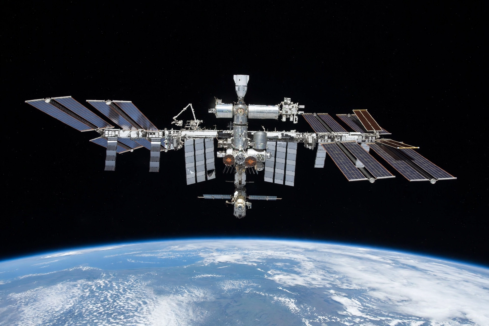

The station
Assembled piece by piece beginning with Russia's Zarya module in 1998, the ISS spans about 109 metres across its solar arrays and trusses, with pressurised modules for living, working and docking. Crews typically number seven, though more are aboard during handovers.
Research
Experiments aboard range from growing plants and crystals in microgravity to studying how long-duration flight affects the human body — knowledge essential for Artemis lunar missions and eventual Mars expeditions.
Visiting vehicles
Crew arrive on SpaceX Crew Dragon and Russian Soyuz; supplies come aboard Dragon, Northrop Grumman Cygnus, Progress, and JAXA's HTV-X generation of cargo craft as recalled.
Spot the station
The ISS is visible to the naked eye from the ground as a bright, fast-moving point of light at dawn and dusk; NASA's Spot the Station service tells observers when it will pass overhead.